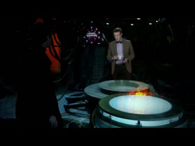
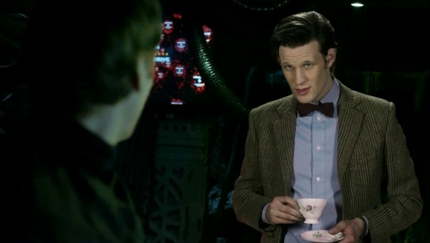

Эра Одиннадцатого Доктора
<<< НАЗАД ||| Инфорарий ||| ДАЛЬШЕ >>>
или с субтитрами:

Inforarium
мини-эпизод к 7 сезону
24 сентября 2013
Формат: 2-минутный эпизод
| Варианты озвучек: | * MVO BaibaKo |
|---|---|
| Скачивание и просмотр: |
Здесь показано, как Доктор удалил всю информацию о себе и своих победах из истории, о чём уже упоминалось в основных сериях после его битвы с Тишиной.
В этом эпизоде Доктор одет в твидовый пиджак, в котором путешествовал с Эми и Рори. Это указывает на то, что сюжет произошёл до эпизода «Снеговики» (2012), когда Доктор сменил наряд. Таким образом, информация о дате 24 сентября 2013 года относится к дате выпуска мини-эпизода (эксклюзивно для DVD- и Blu-ray-изданий 7 сезона), а не к событиям внутри вселенной «Доктора Кто». То есть, хронологически он расположен верно
